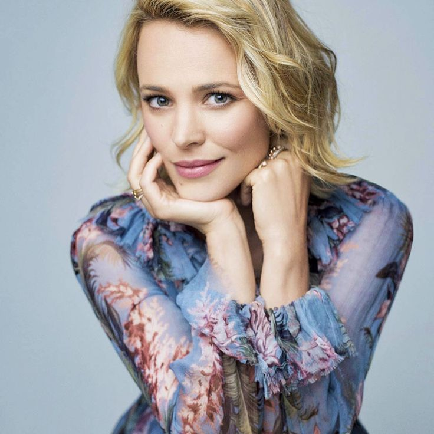

Ре́йчел Энн Мака́дамс (англ. Rachel Anne McAdams; род. 17 ноября 1978[1][2], Лондон, Онтарио, Канада) — канадская киноактриса. В 2002 году сыграла в фильме «Идеальный пирог», за роль в котором была номинирована на награду Genie Award (престижнейшая канадская кинопремия). Первой её значимой ролью была роль в фильме «Дрянные девчонки» (2004), где она сыграла Реджину Джордж. Затем она снялась в фильме по одноимённому роману Николаса Спаркса «Дневник памяти» (2004) и в комедии «Незваные гости» (2005). В 2009 году она сыграла Ирэн Адлер в фильме Гая Ричи «Шерлок Холмс». В 2010 году вышла комедия «Доброе утро» с Рейчел Макадамс в главной роли.
